In this lesson, you use navigation controllers and segues to create the navigation flow of the FoodTracker app. At the end of the lesson, you’ll have a complete navigation scheme and interaction flow for the app. When you’re finished, your app will look something like this:
このレッスンでは、あなたはナビゲーションコントローラとセグエを使って、FoodTrackerアプリのナビゲーションの流れを作成します。このレッスンの終わりには、あなたはアプリのための完全なナビゲーションの枠組みと相互作用の流れを獲得するしょう。あなたが作業し終わった時、あなたのアプリはこのようなものに見えるでしょう：
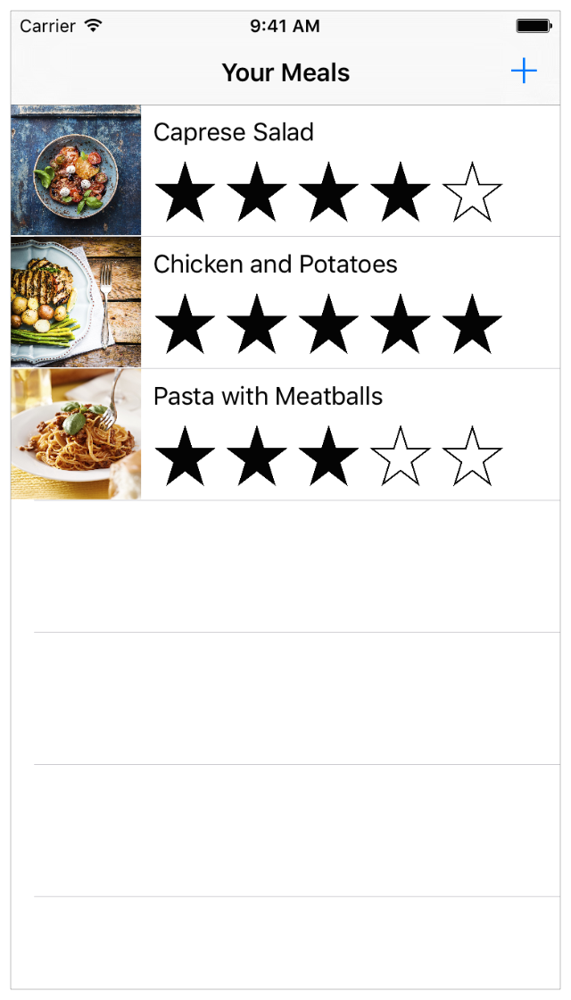
Learning Objectives
学習する目標
At the end of the lesson, you’ll be able to:
このレッスンの終わりに、あなたが出来るようになるのは：
Embed an existing view controller within a navigation controller in a storyboard
既存のビューコントローラをストーリーボードにおいてナビゲーションコントローラ内部に埋め込む
Create segues between view controllers
ビューコントローラ間のセグエ（遷移）を作成する
Edit the attributes of a segue in a storyboard using the Attributes inspector
セグエの属性をストーリーボードにおいてAttributesインスペクタを使って編集する
Pass data between view controllers using the prepareForSegue(_:sender:) method
データをビューコントローラ間でprepareForSegue(_:sender:)メソッドを使って渡す
Perform an unwind segue
巻き戻しセグエを実行する
Use stack views to create robust, flexible layouts
スタックビューを使って、頑丈で、柔軟なレイアウトを作成する
Add a Segue to Navigate Forward
セグエを加えて前へナビゲートする
With data displaying as expected, it’s time to provide a way to navigate from the meal list to the meal scene. Transitions between scenes are called segues.
データが期待するように表示されているので、食事リストから食事シーンへとナビゲートする方法を提供する時です。シーン間の転換はセグエ（遷移。切れ目なく続くこと）と呼ばれます。
Before creating a segue, you need to configure your scenes. First, you’ll put your table view controller inside of a navigation controller. A navigation controller manages transitions backward and forward through a series of view controllers. The set of view controllers managed by a particular navigation controller is called its navigation stack. The first item added to the stack becomes the root view controller and is never popped off (removed from) the navigation stack.
セグエの作成の前に、あなたは、あなたのシーンを構成することを必要とします。最初に、あなたは、あなたのテーブルビューコントローラを、あるナビゲーションコントローラの内部に置きます。ナビゲーションコントローラは、一続きのビューコントローラの中での前後の場面転換を管理します。ある特定のナビゲーションコントローラによって管理されるある一組のビューコントローラは、それのナビゲーションスタックと呼ばれます。そのスタックに追加される最初の項目は、ルートビューコントローラになります、そして決してそのナビゲーションスタックからはじき出される（取り除かれる）ことはありません。
To add a navigation controller to your meal list scene
ナビゲーションコントローラをあなたの食事リストシーンに加えるには
Open your storyboard, Main.storyboard.
あなたのストーリーボード、Main.storyboardを開いてください。
Select the table view controller by clicking on its scene dock.
テーブルビューコントローラを、それのシーンドック上でクリックすることで選択してください。
With the table view controller selected, choose Editor > Embed In > Navigation Controller.
テーブルビューコントローラが選択された状態で、Editor > Embed In > Navigation Controllerを選んでください。
Xcode adds a new navigation controller to your storyboard, sets the storyboard entry point to it, and creates a relationship between the new navigation controller and your existing table view controller.
Xcodeは、新しいナビゲーションコントローラをあなたのストーリーボードに加えて、ストーリーボードエントリポイントをそれに設定します、そして新しいナビゲーションコントローラとあなたの既存のテーブルビューコントローラとの間の関係を作成します。
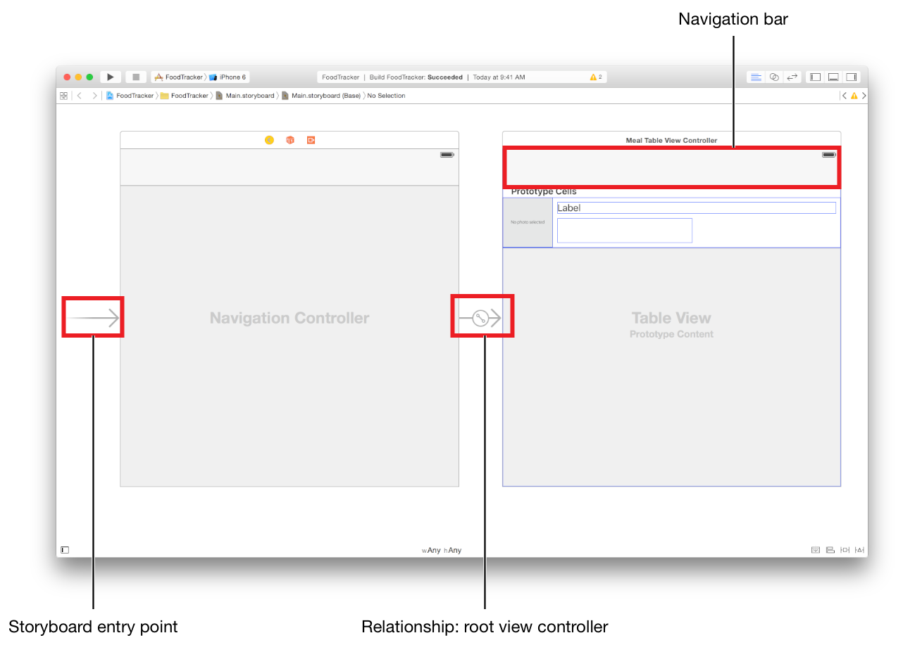
On the canvas, the icon connecting the controllers is the root view controller relationship. The table view controller is the navigation controller’s root view controller. The storyboard entry point is set to the navigation controller because the navigation controller is now a container for the table view controller.
キャンバス上で、コントローラ同士を接続しているアイコンは、ルートビューコントローラ関係です。テーブルビューコントローラは、ナビゲーションコントローラの持つルートビューコントローラです。ストーリーボードエントリポイントは、ナビゲーションコントローラに設定されます、なぜならナビゲーションコントローラは、現在テーブルビューコントローラのコンテナ（容れ物）だからです。
You might notice that your table view has a bar on top of it now. This is a navigation bar. Every controller on the navigation stack gets a navigation bar, which can contain controls for backward and forward navigation. Next, you’ll add a button to this navigation bar to transition to the meal scene.
あなたは、今ではあなたのテーブルビューがそれの上部にバーを持つことに気づくかもしれません。これはナビゲーションバーです。ナビゲーションスタック上のすべてのコントローラは、ナビゲーションバーを手に入れます、それは前後へのナビゲーションのためのコントロールを含むことができます。次に、あなたは、あるボタンをこのナビゲーションバーに加えて、食事シーンに場面転換するようにします。
Checkpoint: Run your app. Above your table view you should now see extra space. This is the navigation bar provided by the navigation controller. The navigation bar extends its background to the top of the status bar, so the status bar doesn’t overlap with your content anymore.
確認点：あなたのアプリを実行してください。あなたのテーブルビューの上部で、あなたは今では余分な空間を見るはずです。これは、ナビゲーションコントローラによって提供されたナビゲーションバーです。ナビゲーションバーは、それの背景をステータスバーの上部まで拡げます、それでステータスバーはあなたのコンテンツと今ではもう重なりません。
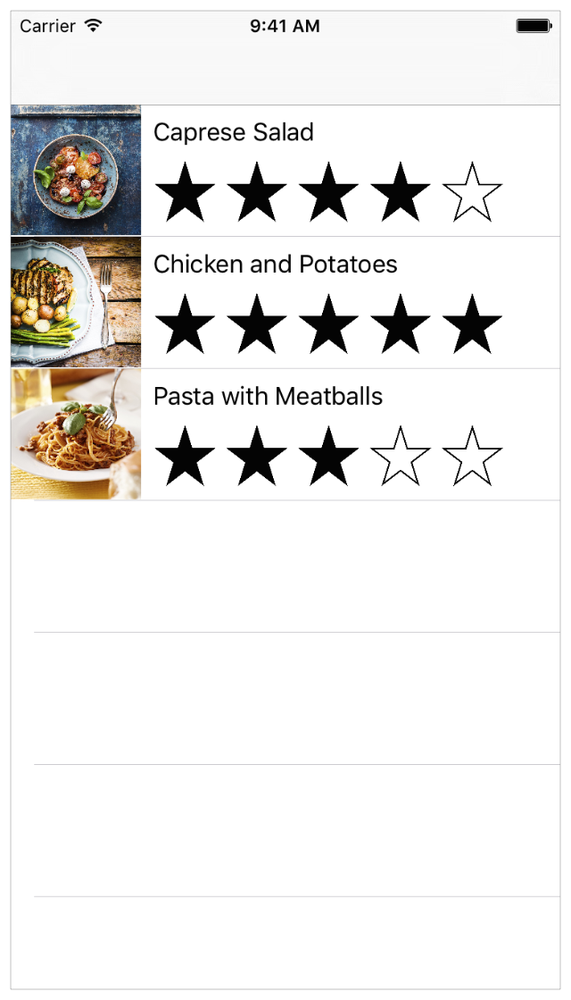
Configure the Navigation Bar for the Scenes
ナビゲーションバーをシーンのために構成する
Now, you’ll add a title (to the meal list) and a button (to add additional meals) to the navigation bar. Navigation bars get their title from the view controller that the navigation controller currently displays—they don’t themselves have a title. You set the title using the navigation item of your meal list (the table view controller) rather than setting it directly on the navigation bar.
今度は、あなたはタイトル（食事リストに）とボタン（追加の食事を加えるために）をナビゲーションバーに加えます。ナビゲーションバーはそれらのタイトルを、ナビゲーションコントローラが現在表示しているビューコントローラから得ます—それらは自身ではタイトルを持ちません。あなたはタイトルを、あなたの食事リスト（テーブルビューコントローラ）のナビゲージョン項目を使って設定します、それを直接ナビゲーションバー上に設定するのではありません。
To configure the navigation bar in the meal list
ナビゲーションバーを食事リストにおいて構成するには
Double-click the navigation bar in the meal list scene.
ナビゲーションバーを食事リストシーンにおいてダブルクリックしてください。
A cursor appears, letting you enter text.
カーソルが現れて、あなたにテキストを入力させます。
Type Your Meals and press Return to save.
Your Mealsをタイプしてリターンキーを押してください。
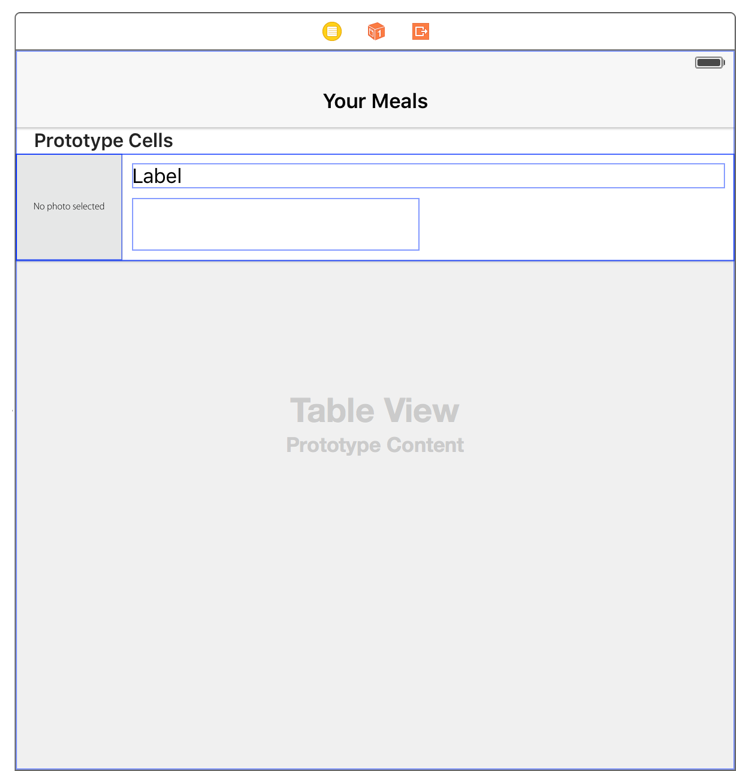
Open the Object library. (Choose View > Utilities > Show Object Library.)
オブジェクトライブラリを開いてください。（View > Utilities > Show Object Libraryを選びます。）
In the Object library, find a Bar Button Item object.
オブジェクトライブラリにおいて、Bar Button Itemオブジェクトを見つけてください。
Drag a Bar Button Item object from the list to the far right of the navigation bar in the meal list scene.
Bar Button Itemオブジェクトをこのリストから食事リストシーンのナビゲーションバーのずっと右へドラッグしてください。
A button called Item appears where you dragged the bar button item.
Itemという名のボタンが、あなたがバーボタン項目（Bar Button Item）をドラッグしたところに現れます。
In the Attributes inspector, choose Add from the pop-up menu next to the System Item option.
Attributesインスペクタにおいて、AddをSystem Itemオプションの隣のポップアップメニューから選んでください。
The button changes to an Add button (+).
ボタンが追加ボタン（+）に変わります。
Checkpoint: Run your app. The navigation bar should now have a title and display an Add button (+). The button doesn’t do anything yet. You’ll fix that next.
確認点：あなたのアプリを実行してください。ナビゲーションバーは、現在タイトルを持ち、追加ボタン（+）を表示します。このボタンはまだ何もしません。あなたはこれを次に修正します。
You want the Add button (+) to bring up the meal scene, so you’ll do this by having the button trigger a segue (or transition) to that scene.
あなたが追加ボタン（+）に望むことは、食事シーンを画面に出すことです、それであなたは、このボタンがそのシーンへのセグエ（画面転換）を引き起こすようにしてこれを行います。
To configure the Add button in the meal scene
追加ボタンを食事シーンにおいて構成するには
On the canvas, select the Add button (+).
キャンバス上で、追加ボタン（+）を選択してください。
Control-drag from the button to the meal scene.
そのボタンから食事シーンまでコントール-ドラッグしてください。
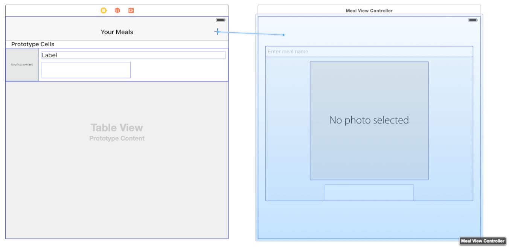
A shortcut menu titled Action Segue appears in the location where the drag ended.
Action Segueとタイトルがついたショートカットメニューが、このドラッグが終わったところに現れます。
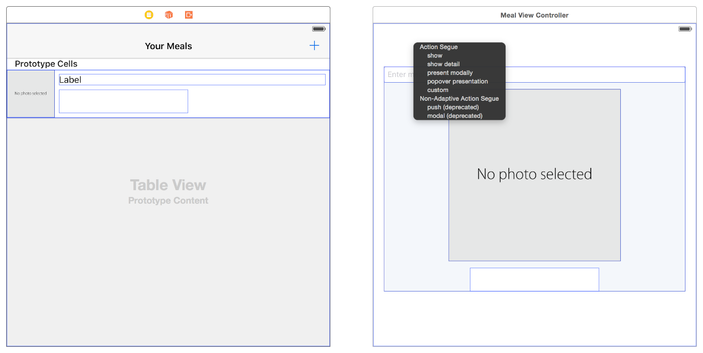
The Action Segue menu allows you to choose what type of segue to use to transition from the meal list to the new meal view controller when the user taps the Add button.
Action Segueメニューがあなたに選ばせるのは、ユーザが追加ボタンをタップする時、どんな種類のセグエを使って食事リストから新しい食事ビューコントローラに画面転換するかです。
Choose show from the Action Segue menu.
showをAction Segueメニューから選んでください。
Xcode sets up the show segue and configures the meal scene to be displayed in a navigation controller—you see the navigation bar in Interface Builder.
Xcodeは、表示セグエを設定し、食事シーンを構成することで、ナビゲーションコントローラにおいて表示されるようにします—あなたはインターフェイスビルダーにおいてナビゲーションバーを確認します。
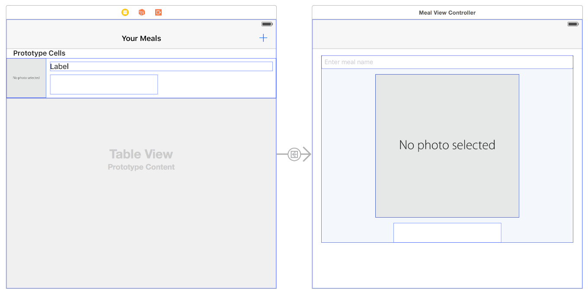
Checkpoint: Run your app. You can click the Add button and navigate to the meal scene from the meal list scene. Because you’re using a navigation controller with a show segue, the backward navigation is handled for you, and a back button automatically appears in the meal scene. This means you can click the back button in the meal scene to get back to the meal list.
確認点：あなたのアプリを実行してください。あなたは「追加」ボタンをクリックすることで、食事リストシーンから食事シーンへと導かれます。あなたがナビゲーションコントローラを表示セグエとともに使っいてるので、後方へのナビゲーションはあなたに代わって取り扱われます、そして戻るボタンが自動的に食事シーンに現れます。これの意味は、あなたは戻るボタンを食事シーンで押すことで、食事リストに戻れるということです。
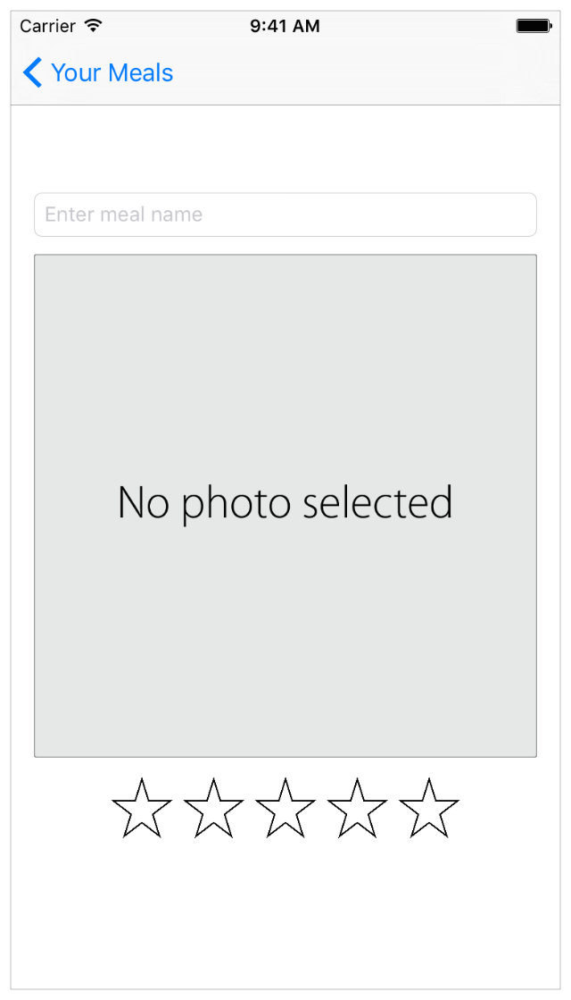
The push-style navigation you get by using the show segue is working just as it’s supposed to—but it’s not quite what you want when adding items. Push navigation is designed for a drill-down interface, where you’re providing more information about whatever the user selected. Adding an item, on the other hand, is a modal operation—the user performs an action that’s complete and self-contained, and then returns from that scene to the main navigation. The appropriate method of presentation for this type of scene is a modal segue.
あなたが表示セグエを使って得たこのプッシュ形式ナビゲーションは、まさにそれがしなければならない通りに機能しています—しかしそれは完全には項目を加える時にあなたが望むことではありません。プッシュナビゲーションが設計されるのは、ドリルダウンのインターフェイスに対してです—そこではあなたはユーザが選択したことが何であれもっと多くの情報を提供しています。ある項目を加えることは、別の面から言えば、モーダルな操作です—ユーザは完全で自己充足なひとつの動作を実行します、そしてそれからそのシーンから主要ナビゲーションに戻ります。この種のシーンを表現する適切な手法は、モーダルセグエです。
Instead of deleting the existing segue and creating a new one, simply change the segue’s style in the Attributes inspector. As is the case with most selectable elements in a storyboard, you can use the Attributes inspector to edit a segue’s attributes.
既存のセグエを削除して新しいものを作成するのではなく、単にそのセグエの形式をAttributesインスペクタにおいて変更してください。ストーリーボードの中のほとんどの選択可能な要素と同じく、あなたはAttributesインスペクタを使ってセグエの属性を編集することができます。
To change the segue style
セグエの形式を変更するには
Select the segue from the meal list scene to the meal scene.
食事リストシーンから食事シーンへのセグエを選択してください。
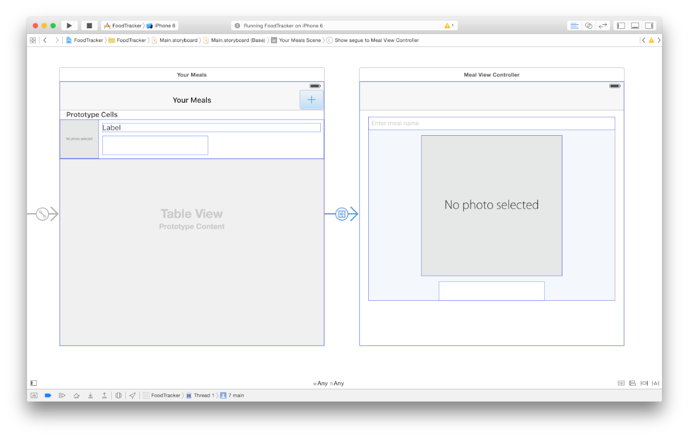
In the Attributes inspector, choose Present Modally from the pop-up menu next to the Segue option.
Attributesインスペクタにおいて、Present ModallyをSegueオプションの隣のポップアップメニューから選んでください。
In the Attributes inspector, type AddItem in the Identifier field. Press Return.
Attributesインスペクタにおいて、AddItemをIdentifier（識別子）欄にタイプしてください。リターンキーを押します。
Later, you’ll need this identifier to identify the segue.
後で、あなたはこの識別子をセグエを識別するのに必要とします。
A modal view controller doesn’t get added to the navigation stack, so it doesn’t get a navigation bar from the meal list’s navigation controller. However, you want to keep the navigation bar to provide the user with visual continuity. To give the meal scene a navigation bar when presented modally, embed it in its own navigation controller.
モーダルビューコントローラは、ナビゲーションスタックに加えられていません、それでそれはナビゲーションバーを食事リストの持つナビゲーションコントローラから取得していません。しかしながら、あなたはナビゲーションバーを保持してユーザに視覚的整合性を提供することを望みます。モーダル表示の時に食事シーンにナビゲーションバーを与えるために、それをそれ自身のナビゲーションコントローラに埋め込んでください。
To add a navigation controller to the meal scene
ナビゲーションコントローラ食事シーンに加えるには
Select the meal scene by clicking on its scene dock.
食事シーンをそれのシーンドックをクリックして選択してください。
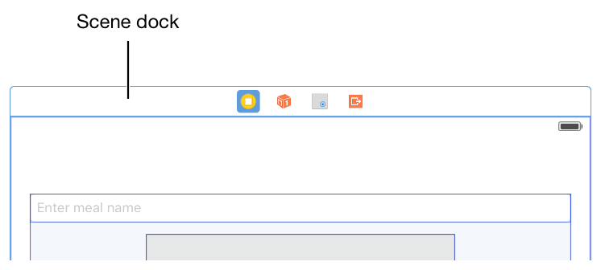
With the view controller selected, choose Editor > Embed In > Navigation Controller.
ビューコントローラが選択された状態で、Editor > Embed In > Navigation Controllerを選んでください。
As before, Xcode adds a navigation controller and shows the navigation bar at the top of the meal scene. Next, configure this bar to add a title to this scene as well as two buttons, Cancel and Save. Later, you’ll link these buttons to actions.
前と同じように、Xcodeはナビゲーションコントローラを加えてナビゲーションバーを食事シーンの上部に表示します。次に、このバーを構成して、タイトルをこのシーンに加えます、それだけでなく２つのボタン、Cancel（キャンセル）とSave（保存）も同様に加えます。後で、あなたはこれらのボタンをアクションと結び付けます。
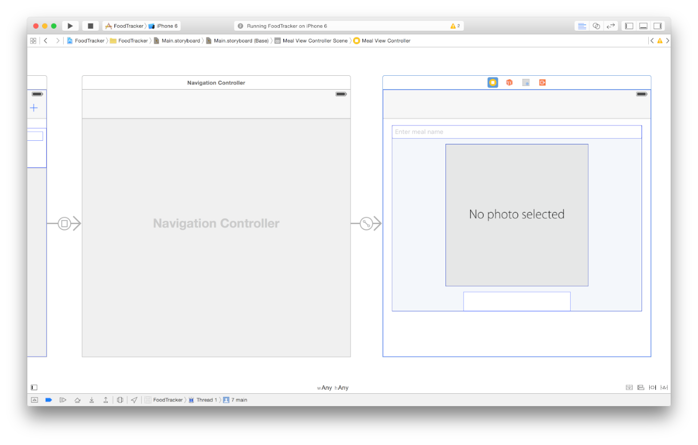
To configure the navigation bar in the meal scene
ナビゲーションバーを食事シーンにおいて構成するには
Double-click the navigation bar in the meal scene.
ナビゲーションバーを食事シーンにおいてダブルクリックしてください。
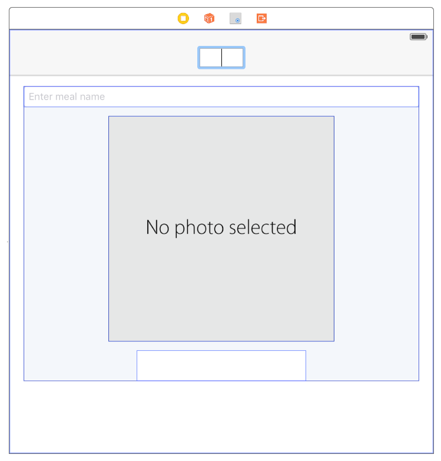
A cursor appears, letting you enter text.
カーソルが現れて、あなたにテキストを入力させます。
Type New Meal and press Return to save.
New Mealをタイプしてからリターンキーを押し保存してください。
Drag a Bar Button Item object from the Object library to the far left of the navigation bar in the meal scene.
Bar Button Itemオブジェクトをオブジェクトライブラリからナビゲーションバーの左端へと食事シーンにおいてドラッグしてください。
In the Attributes inspector, for System Item, select Cancel.
Attributesインスペクタにおいて、System Itemに対して、Cancelを選択してください。
The button text changes to Cancel.
ボタンテキストがCancelに変わります。
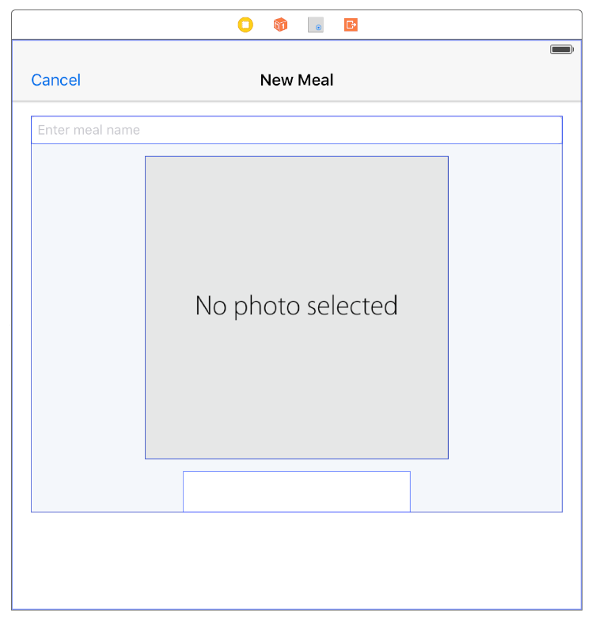
Drag another Bar Button Item object from the Object library to the far right of the navigation bar in the meal scene.
もう１つのBar Button Itemオブジェクトをオブジェクトライブラリからナビゲーションバーの右端へと食事シーンにおいてドラッグしてください。
In the Attributes inspector, for System Item, select Save.
Attributesインスペクタにおいて、System Itemに対して、Saveを選択してください。
The button text changes to Save.
ボタンテキストがSaveに変わります。
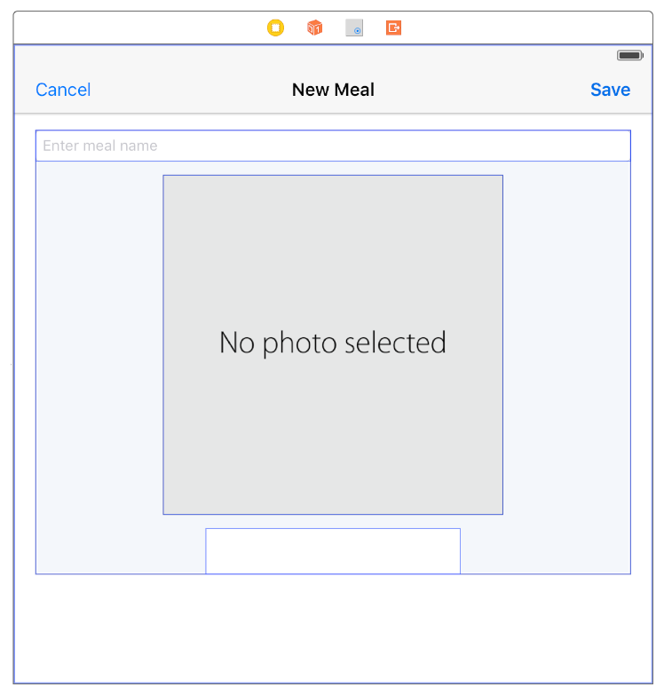
Checkpoint: Run your app. Click the Add button. You still see the meal scene, but there’s no longer a button to navigate back to the meal list—instead, you see the two buttons you added, Cancel and Save. Those buttons aren’t linked to any actions yet, so you can click them, but they don’t do anything. You’ll configure the buttons to save or cancel adding a new meal and to bring the user back to the meal list soon.
確認点：あなたのアプリを実行してください。Addボタンをクリックしてください。あなたはやはり食事シーンを見ます、しかしもはや食事リストに戻るよう導くボタンはありません—代わりに、あなたが加えた２つのボタン、CancelとSaveを見ます。それらのボタンは、まだどんなアクションとも結び付けられません、それであなたはそららをクリックできますが、それらは何もしません。あなたはこれらのボタンを、新しい食事の追加を保存またはキャンセルして、ユーザが食事リストにすぐに戻るように構成します。
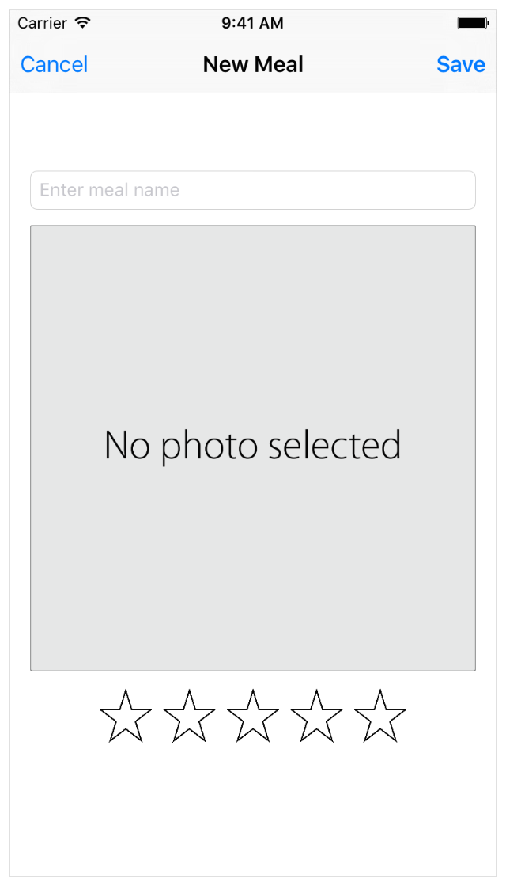
Finalize the UI with Auto Layout
UIを自動レイアウトを使って仕上げる
It’s been a while since you built the original UI, and a lot of things have changed since then. At this point, you won’t be making any more changes to your layout, so it’s time to make sure everything looks great with Auto Layout.
あなたが最初のUIをビルドしてからしばらくたちます、そして多くのことがその時から変更されました。この時点で、あなたは何かさらに変更をあなたのレイアウトにすることはありません、それですべてのものが素晴らしく見えるのを確実にするために自動レイアウトを使う時です。
To do this, you’ll make a few simple adjustments to your stack view.
これをするために、あなたは少しばかりの簡単な調節をあなたのスタックビューに行います。
To update the layout of the stack view
スタックビューのレイアウトを更新するには
In the meal scene, click the light blue area to select the stack view.
食事シーンにおいて、明るい青の領域をクリックしてスタックビューを選択してください。
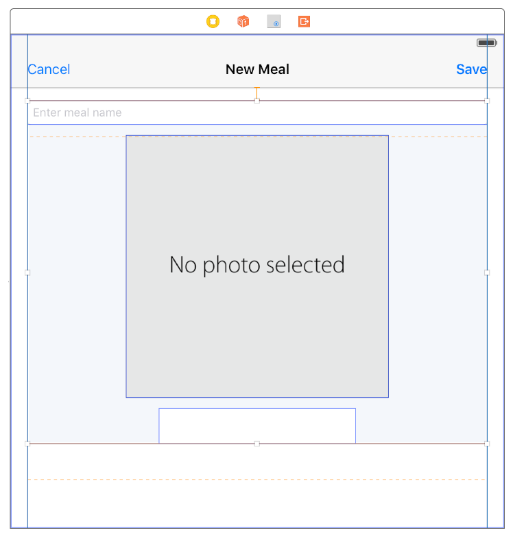
Alternatively, select Stack View in the outline view.
または代わりに、Stack Viewをアウトランビューにおいて選択してください。
On the bottom right of the canvas, open the Resolve Auto Layout Issues menu.
キャンハスの一番下右で、Resolve Auto Layout Issues（自動レイアウトの問題を解決）メニューを開いてください。
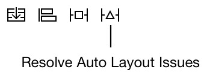
Under Selected Views, choose Update Constraints.
Selected Views（選択中のビュー）の下で、Update Constraints（制約を更新）を選んでください。
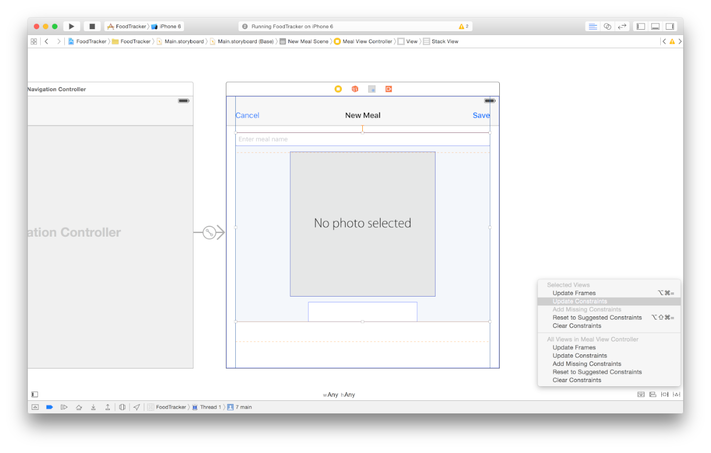
The elements stay in the same position, but the stack view is now pinned to the navigation bar instead of the top margin of the view.
それぞれの要素は同じ位置のままです、しかしスタックビューは今ではナビゲーションバーに固定されます、ビューの上部余白ではなく。
The meal scene constraints and UI should look something like this:
食事シーン制約とUIは、このようなものに見えるはずです：
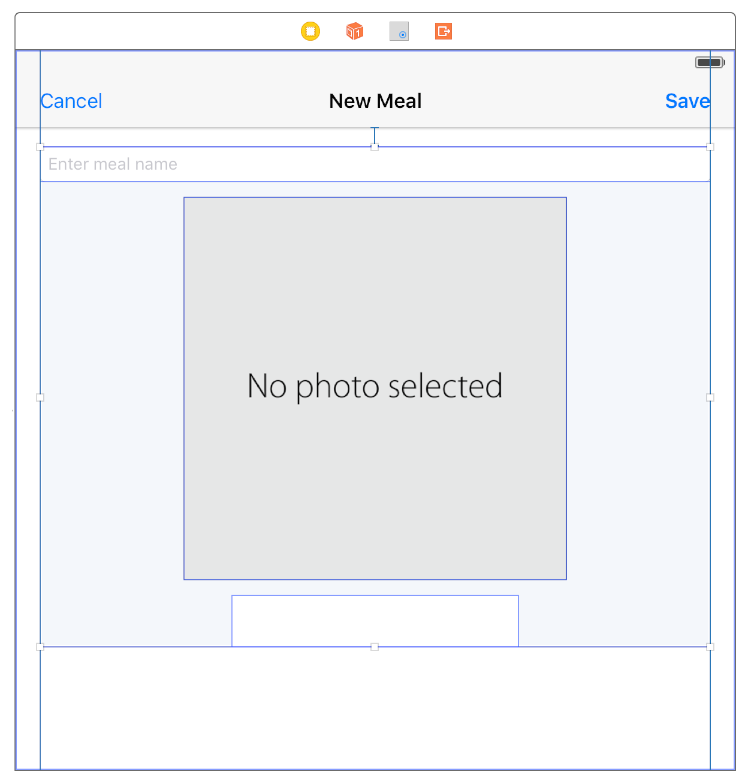
Checkpoint: Run your app. The text field, image view, and rating control should appear closer to the navigation bar.
確認点：あなたのアプリを実行してください。テキスト欄、イメージビュー、そして格付けコントロールがナビゲーションバーのそばに現れるはずです。
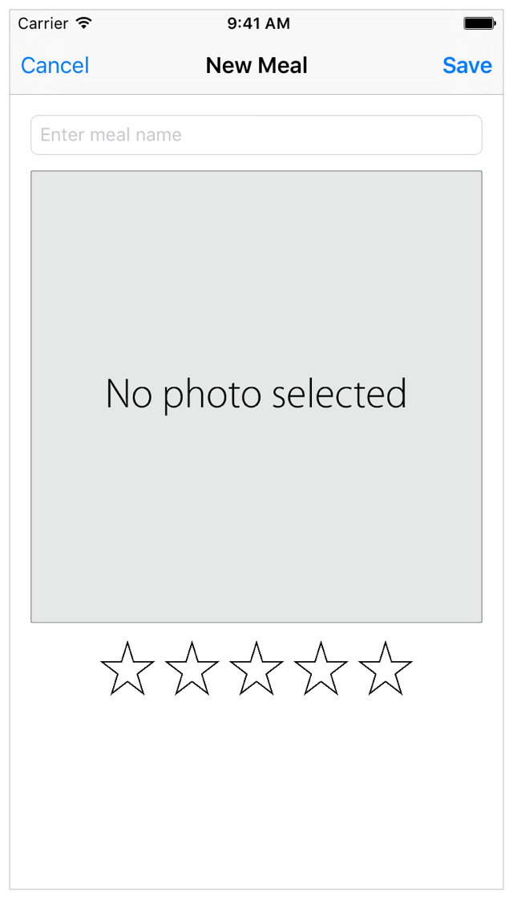
Store New Meals in the Meal List
新しい食事を食事リストに格納する
The next step in creating the FoodTracker app’s functionality is implementing the ability for a user to add a new meal. Specifically, when a user enters a meal name, rating, and photo in the meal scene and taps the Save button, you want MealViewController to configure a Meal object with the appropriate information and pass it back to MealTableViewController to display in the meal list.
FoodTrackerアプリの機能性の作成における次の段階は、ユーザが新しい食事を追加する能力の実装です。具体的には、ユーザが食事名、格付け、そして写真を食事シーンにおいて入力してSaveボタンをタップする時、あなたはMealViewControllerがひとつのMealオブジェクトを適切な情報とともに構成して、それをMealTableViewControllerに戻して渡して食事リストにおいて表示することを望みます。
Start by adding a Meal property to MealViewController.
MealプロパティをMealViewControllerに加えることで始めます。
To add a Meal property to MealViewController
MealプロパティをMealViewControllerに加えるには
Open MealViewController.swift.
MealViewController.swiftを開いてください。
Below the ratingControloutlet in MealViewController.swift, add the following property:
MealViewController.swiftにおいてratingControlアウトレットの下に、以下のプロパティを加えてください：
/*
This value is either passed by `MealTableViewController` in `prepareForSegue(_:sender:)` （この値は、`prepareForSegue(_:sender:)`において`MealTableViewController`によって渡されるか、）
or constructed as part of adding a new meal. （または加えている新しい食事の一部として組み立てられます。）
*/
varmeal: Meal?
This declares a property on MealViewController that is an optionalMeal, which means that at any point, it may be nil.
これは、あるプロパティをMealViewController上で宣言します、それはオプショナルのMealです、それが意味するのはいずれかの時点でそれがnilであるかもしれないということです。
You care about configuring and passing the Meal only if the Save button was tapped. To be able to determine when this happens, add the Save button as an outlet in MealViewController.swift.
あなたがMealを構成して渡すことについて面倒を見るのは、Saveボタンがタップされた場合のみです。それが起こった時を判定可能にするには、SaveボタンをアウトレットとしてMealViewController.swiftに加えます。
To connect the Save button to the MealViewController code
SaveボタンをMealViewControllerコードに接続するには
Open your storyboard.
あなたのストーリーボードを開いてください。
Click the Assistant button in the Xcode toolbar to open the assistant editor.
AssistantボタンをXcodeツールバーにおいてクリックしてアシスタントエディタを開いてください。
If you want more space to work, collapse the project navigator and utility area by clicking the Navigator and Utilities buttons in the Xcode toolbar.
あなたがもっと作業空間を必要とするならば、プロジェクトナビゲータとユーティリティ区画をXcodeツールパーのNavigatorとUtilitiesボタンをクリックすることで折り畳んでください。
In your storyboard, select the Save button.
あなたのストーリーボードにおいて、Saveボタンを選択してください。
Control-drag from the Save button on your canvas to the code display in the editor on the right, stopping the drag at the line just below your ratingControl property in MealViewController.swift.
あなたのキャンバス上のSaveボタンから右のエディタのコード表示までコントロール-ドラッグして、あなたのMealViewController.swiftの中のratingControlプロパティのすぐ下の行でドラッグをやめます。
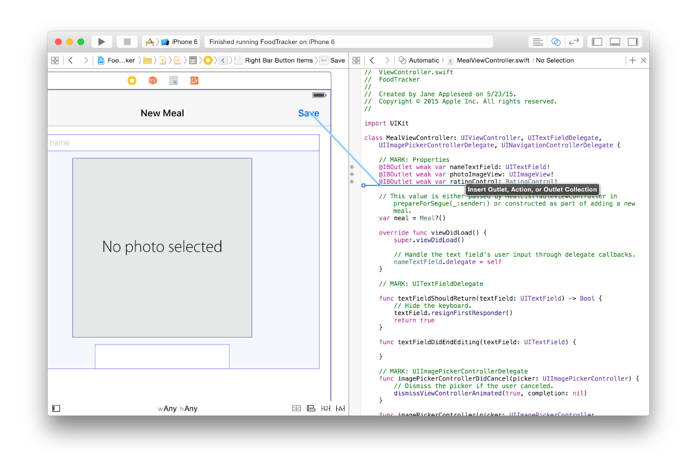
In the dialog that appears, for Name, type saveButton.
現れたダイアログにおいて、名前に、saveButtonをタイプしてください。
Leave the rest of the options as they are. Your dialog should look like this:
残りのオプションはそれらのままにしておきます。あなたのダイアログはこのように見えるはずです：
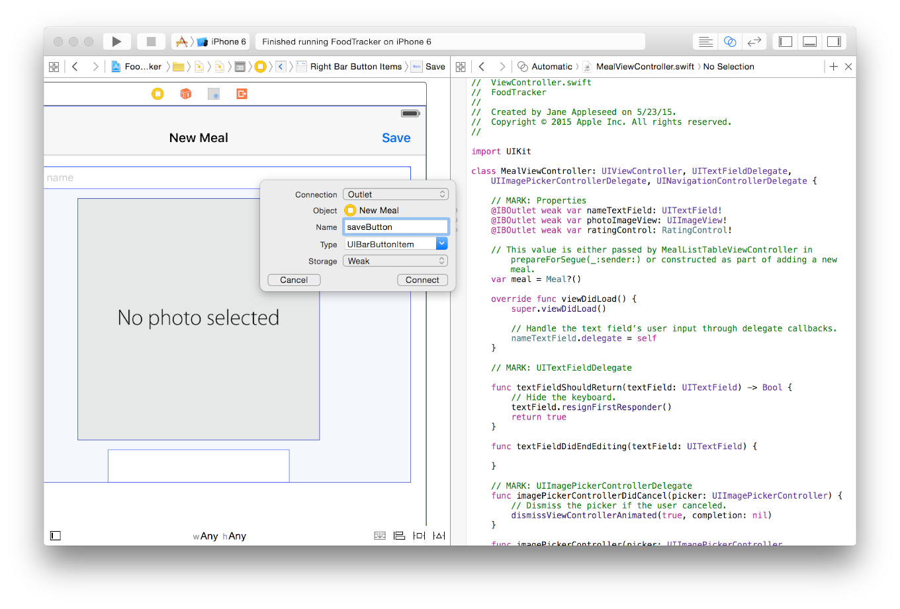
Click Connect.
Connectをクリックしてください。
You now have a way to identify the Save button.
あなたは今ではSaveボタンを識別する方法を持ちます。
Create an Unwind Segue
巻き戻しセグエの作成
The task now is to pass the Meal object to MealTableViewController when a user taps the Save button and discard it when a user taps the Cancel button, switching from displaying the meal scene to displaying the meal list in either case.
次の作業はMealオブジェクトを、ユーザがSaveボタンをタップする時にはMealTableViewControllerに渡し、ユーザがCancelボタンをタップする時には廃棄して、両方の場合で食事シーンの表示から食事リストの表示へと切り替えることです。
To accomplish this, you’ll use an unwind segue. An unwind segue moves backward through one or more segues to return the user to an existing instance of a view controller. You use unwind segues to implement reverse navigation.
これを成し遂げるために、あなたは巻き戻しセグエを使います。巻き戻しセグエは、後ろへと１つ以上のセグエを通り抜けて移動して、ユーザをあるビューコントローラの既存のインスタンスに戻します。あなたは、巻き戻しセグエを使って復帰ナビゲーションを実装します。
Whenever a segue gets triggered, it provides a place for you to add your own code that gets executed. This method is called prepareForSegue(_:sender:), and it gives you a chance to store data and do any necessary cleanup on the source view controller (the view controller that the segue is coming from). You’ll implement this method in MealViewController to do exactly that.
あるセグエが引き起こされる時はいつでも、それはあなたのために場所を提供して、あなた自身のコードを加えさせ、それが実行されるようになります。このメソッドは、prepareForSegue(_:sender:)と呼ばれます、そしてそれはあなたにデータの格納や何らかの必要な片付けをソース（発生）ビューコントローラ（セグエがそこから始まるビューコントローラ）上で行う機会を与えます。あなたは、このメソッドをMealViewControllerにおいて実装することで厳密にそれが実行されるようにします。
To implement the prepareForSegue(_:sender:) method on MealViewController
implement the prepareForSegue(_:sender:)メソッドをMealViewController上で実装するには
Return to the standard editor by clicking the Standard button.
標準エディタにStandardボタンをクリックすることで戻ってください。
Open MealViewController.swift.
MealViewController.swiftを開いてください。
In MealViewController.swift, above the // MARK: Actions section, add the following:
MealViewController.swiftにおいて、// MARK: Actions節の上で、以下を加えてください：
// MARK: Navigation
This is a comment to help you (and anybody else who reads your code) know that this method is related to the navigation flow of your app.
このコメントは、あなたが（そしてあなたのコードを読む他の誰でもが）このメソッドがあなたのアプリのナビゲーションの流れに関するものだと知る助けとなります。
Below the comment, add this method skeleton:
このコメントの下に、このメソッド骨組みを加えてください：
// This method lets you configure a view controller before it's presented. （このメソッドは、あなたにビューコントローラをそれが提供される前に構成させます。）
In the prepareForSegue(_:sender:) method, add the following if statement:
このprepareForSegue(_:sender:)メソッドにおいて、以下のif文を加えてください：
ifsaveButton === sender {
}
This code uses the identity operator (===) to check that the object referenced by the saveButton outlet is the same object instance as sender. If it is, the if statement is executed.
このコードは同一性演算子（===）を使って、saveButtonアウトレットによって参照されるオブジェクトがsenderと同じオブジェクトインスタンス部あることを確認します。もしそうであるならば、このif文が実行されます。
In the if statement, add the following code:
if文において、以下のコードを加えてください：
letname = nameTextField.text ?? ""
letphoto = photoImageView.image
letrating = ratingControl.rating
This code creates constants from the current text field text, selected image, and rating in the scene.
このコードは、そのシーンにおける現在のテキスト欄のテキスト、選択された画像、そして格付けから定数を作成します。
Notice the nil coalescing operator (??) in the name line. The nil coalescing operator is used to return the value of an optional if the optional has a value, or return a default value otherwise. Here, the operator unwraps the optional String returned by nameTextField.text (which is optional because there may or may not be text in the text field), and returns that value if it’s a valid string. But if it’s nil, the operator the returns the empty string ("") instead.
nil合体演算子（??）をname行において注目してください。nil合体演算子は、オプショナルが値を持つならばオプショナルの値を、またはそうでなければ省略時の値を返します。ここで、この演算子は、nameTextField.text（これはオプショナルです、なぜならテキスト欄にテキストがあるかもしれないし無いかもしれないからです）によって返されるオプショナルのStringをアンラップします、そしてそれが有効な文字列ならばその値を返します。しかしそれがnilならば、この演算子は空の文字列（""）をその代わりに返します。
In the if statement, add the following code:
if文において、以下のコードを加えてください：
// Set the meal to be passed to MealTableViewController after the unwind segue. （mealを巻き戻しセグエの後にMealTableViewControllerに渡されるようにする。）
The next step in creating the unwind segue is to add an action method to the destination view controller (the view controller that the segue is going to). This method must be marked with the IBAction attribute and take a segue (UIStoryboardSegue) as a parameter. Because you want to unwind back to the meal list scene, you need to add an action method with this format to MealTableViewController.swift.
巻き戻しセグエを作成する次の段階は、アクションメソッドをデスティネーション（行先）ビューコントローラ（セグエが向かっている先のビューコントローラ）に加えることです。このメソッドは、IBAction属性で記しされて１つのセグエ（UIStoryboardSegue）をパラメータとして取らなければなりません。あなたは食事リストシーンへと巻き戻し帰りたいので、あなたに必要なのはこの形式を使ったアクションメソッドをMealTableViewController.swiftに加えることです。
In this method, you’ll write the logic to add the new meal (that’s passed from MealViewController, the source view controller) to the meal list data and add a new row to the table view in the meal list scene.
このメソッドにおいて、あなたはロジックを書いて、新しい食事（それはMealViewController、ソースビューコントローラから渡されます）を食事リストデータに加えて、食事リストシーンにおいて新しい行をテーブルビューに加えるようにします。
To add an action method to MealTableViewController
アクションメソッドをMealTableViewControllerに加えるには
Open MealTableViewController.swift.
MealTableViewController.swiftを開いてください。
In MealTableViewController.swift, before the last curly brace (}), add the following:
MealTableViewController.swiftにおいて、最後の波括弧（}）の前に、以下を加えてください：
There’s quite a lot happening in the condition for this if statement.
このif文の条件にはなかなか多くの事が起こっています。
This code uses the optional type cast operator (as?) to try to downcast the source view controller of the segue to type MealViewController. You need to downcast because sender.sourceViewController is of type UIViewController, but you need to work with MealViewController.
このコードは、オプショナル型キャスト演算子（as?）を使ってダウンキャストを試み、このセグエのソースビューコントローラを型MealViewControllerにしようとします。あなたはダウンキャストを必要とします、なぜならsender.sourceViewControllerは型UIViewControllerですが、あなたが必要とするのはMealViewControllerを扱うことです。
The operator returns an optional value, which will be nil if the downcast wasn’t possible. If the downcast succeeds, the code assigns that view controller to the local constant sourceViewController, and checks to see if the meal property on sourceViewController is nil. If the meal property is non-nil, the code assigns the value of that property to the local constant meal and executes the if statement.
この演算子はオプショナルの値を返します、それはダウンキャストが可能でなかったならばnilになります。ダウンキャストが成功したならば、コードはそのビューコントローラをローカル定数sourceViewControllerに割り当てます、そしてsourceViewController上のmealプロパティがnilかどうか確認するため調査します。mealプロパティが非nilならば、コードはそのプロパティの値をローカル定数mealに割り当ててif文を実行します。
If either the downcast fails or the meal property on sourceViewController is nil, the condition evaluates to false and the if statement doesn’t get executed.
ダウンキャストが失敗する、またはsourceViewController上のmealプロパティがnilである、このどちらでも、この条件はfalseに評価されてif文は実行されません。
In the if statement, add the following code:
if文において、以下のコードを加えてください：
This code computes the location in the table view where the new table view cell representing the new meal will be inserted, and stores it in a local constant called newIndexPath.
このコードはテーブルビューの中の場所を算出します、そこは新しい食事を表している新しいテーブルビューセルが挿入されるところです、そしてそれをローカル定数newIndexPathに格納します。
In the if statement, below the previous line of code, add the following code:
if文において、前のコード行の下で、以下のコードを加えてください：
meals.append(meal)
This adds the new meal to the existing list of meals in the data model.
これは新しい食事を、データモデルにおいて既存の食事のリストに加えます。
In the if statement, below the previous line of code, add the following code:
if文において、前のコード行の下で、以下のコードを加えてください：
This animates the addition of a new row to the table view for the cell that contains information about the new meal. The .Bottom animation option shows the inserted row slide in from the bottom.
これは、新しい食事についての情報を含んでいるセルのためのテーブルビューへ新しい行の追加をアニメーション（動画）にします。.Bottomアニメーションオプションは、挿入される行を下から滑り込むように表示します。
You’ll finish a more advanced implementation of this method in a little while, but for now, the unwindToMealList(_:) action method should look like this:
あなたは、このメソッドのより進んだ実装を少し後でやり遂げます、しかし今のところ、unwindToMealList(_:)アクションメソッドはこのように見えるはずです：
Now you need to create the actual unwind segue to trigger this action method.
次にあなたが必要とするのは、このアクションメソッドを引き起こす、実際の巻き戻しセグエを作成することです。
To link the Save button to the unwindToMealList action method
SaveボタンをunwindToMealListアクションメソッドに接続するには
Open your storyboard.
あなたのストーリーボードを開いてください。
On the canvas, Control-drag from the Save button to the Exit item at the top of the meal scene.
キャンバス上で、Saveボタンから食事シーン上部のExit項目までコントロール-ドラッグしてください。
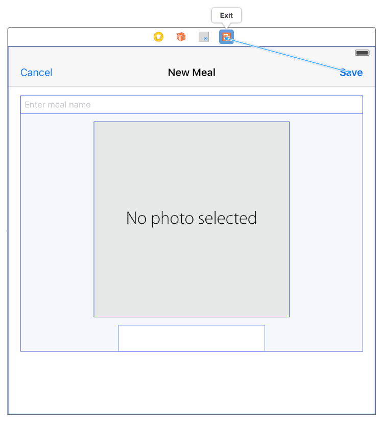
A menu appears in the location where the drag ended.
メニューが、ドラッグが終わったところに現れます。
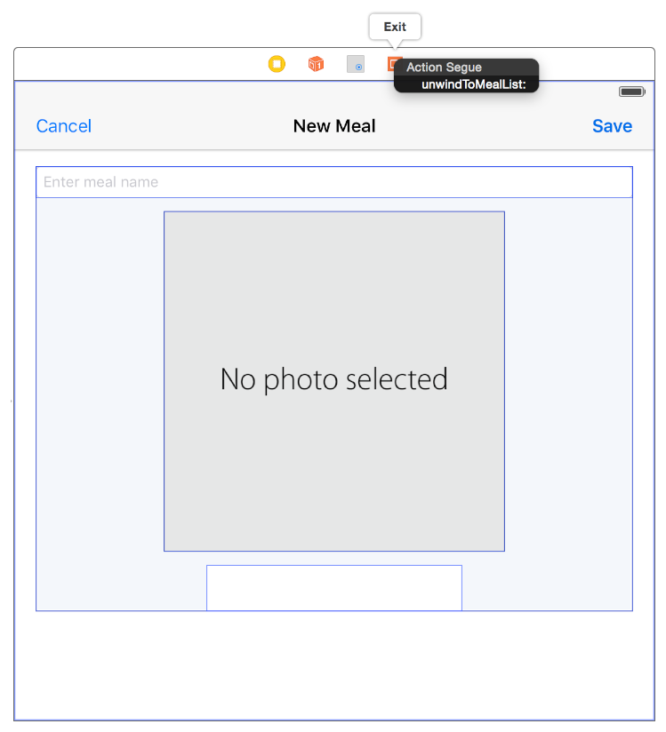
Choose unwindToMealList: from the shortcut menu.
このショートカットメニューからunwindToMealList:を選んでください。
Now, when users tap the Save button, they navigate back to the meal list scene, during which process the unwindToMealList(_:) action method is called.
今では、ユーザがSaveボタンをタップする時、彼らは食事シーンリストへ導かれて戻ります、その処理の間にunwindToMealList(_:)アクションメソッドが呼ばれます。
Checkpoint: Run your app. Now when you click the Add button (+), create a new meal, and click Save, you should see the new meal in your meal list.
確認点：あなたのアプリを実行してください。今ではあなたがAddボタン（+）をクリックして、新しい食事が作成され、そしてSaveをクリックする時、あなたは新しい食事をあなたの食事リストの中に見るはずです。
Disable Saving When the User Doesn't Enter an Item Name
ユーザが項目名を入力しないとき保存できないようにする
What happens if a user tries to save a meal with no name? Because the meal property on MealViewController is an optional and you set your initializer up to fail if there’s no name, the Meal object doesn’t get created and added to the meal list—which is what you expect to happen. But you can take this a step further and keep users from accidentally trying to add meals without a name by disabling the Save button while they’re typing a meal name, and checking that they’ve specified a valid name before letting them dismiss the keyboard.
ユーザが食事を名前なしで保存しようとするとき何が起こるでしょう？MealViewController上のmealプロパティがオプショナルであり、あなたが名前なしでは失敗するようにあなたのイニシャライザを設定したので、Mealオブジェクトは作成されず食事リストに加えられません—これはあなたが起こることを期待するものです。しかしあなたはこれを１段先に進めて、ユーザが間違えて食事を名前なしで加える試みをしないようにできます、それは彼らが食事名をタイプしている間Saveボタンを使用不能にすること、そして彼らが有効な名前を指定したことを彼らにキーボードを片付けさせる前にチェックすることによってです。
To disable the Save button when there’s no item name
Saveボタンを項目名がない時は使用不可能にするには
In MealViewController.swift, find the // MARK: UITextFieldDelegate section.
MealViewController.swiftにおいて、// MARK: UITextFieldDelegate節を見つけてください。
You can jump to it quickly using the functions menu, which appears if you click the name of the file at the top of the editor area.
あなたは、素早く関数メニューを使ってジャンプできます、それはあなたがファイルの名前をエディタ区画の上部でクリックするならば現れます。
In this section, add another UITextFieldDelegate method:
この節において、もう１つのUITextFieldDelegateメソッドを加えてください：
// Disable the Save button while editing. （編集の間Saveボタンを利用不可能にする。）
saveButton.enabled = false
}
The textFieldDidBeginEditing method gets called when an editing session begins, or when the keyboard gets displayed. This code disables the Save button while the user is editing the text field.
textFieldDidBeginEditingメソッドは、編集期間が始まる時、またはキーボードが表示される時に呼ばれます。このコードは、ユーザがテキスト欄を編集している間、Saveボタンを使用不能にします。
Below the textFieldDidBeginEditing(_:) method, add another method:
textFieldDidBeginEditing(_:)メソッドの下で、別のメソッドを加えてください：
funccheckValidMealName() {
// Disable the Save button if the text field is empty. （テキスト欄が空ならばSaveボタンを利用不可能にする。）
lettext = nameTextField.text ?? ""
saveButton.enabled = !text.isEmpty
}
This is a helper method to disable the Save button if the text field is empty.
これはヘルパーメソッドで、テキスト欄が空ならばSaveボタンを使用不能にします。
Find the textFieldDidEndEditing(_:) method:
textFieldDidEndEditing(_:)メソッドを見つけてください：
The implementation should be empty at this point.
実装はこの時点では空のはずです。
Add these lines of code:
これらのコード行を加えてください：
checkValidMealName()
navigationItem.title = textField.text
The first line calls checkValidMealName() to check if the text field has text in it, which enables the Save button if it does. The second line sets the title of the scene to that text.
最初の行は、checkValidMealName()を呼ぶことでテキスト欄がそれの中にテキストを持つかチェックします、そしてそれは、Saveボタンをそれがそうならば利用可能にします。２行目は、このシーンのタイトルを、そのテキストに設定します。
Find the viewDidLoad() method.
viewDidLoad()メソッドを見つけてください：
overridefuncviewDidLoad() {
super.viewDidLoad()
// Handle the text field’s user input through delegate callbacks. （テキスト欄のユーザ入力を委任先コールバックを経由して取り扱います。）
nameTextField.delegate = self
}
Add a call to checkValidMealName() at the implementation to make sure the Save button is disabled until a user enters a valid name:
checkValidMealName()への呼び出しを実装に加えることで、ユーザが有効な名前を入力するまでSaveボタンが利用不可であるのを確実にしてください。
// Enable the Save button only if the text field has a valid Meal name. （Saveボタンをテキスト欄が有効なMeal名を持つ場合にのみ使用可能にする）
checkValidMealName()
Your viewDidLoad() method should look like this:
あなたのviewDidLoad()メソッドはこのように見えるはずです：
overridefuncviewDidLoad() {
super.viewDidLoad()
// Handle the text field’s user input through delegate callbacks. （テキスト欄のユーザ入力を委任先コールバックを経由して取り扱います。）
nameTextField.delegate = self
// Enable the Save button only if the text field has a valid Meal name. （Saveボタンをテキスト欄が有効なMeal名を持つ場合にのみ使用可能にする）
checkValidMealName()
}
And your textFieldDidEndEditing(_:) method should look like this:
そしてあなたのtextFieldDidEndEditing(_:)メソッドはこのように見えるはずです：
Checkpoint: Run your app. Now when you click the Add button (+), the Save button is disabled until you enter a valid (nonempty) meal name and dismiss the keyboard.
確認点：あなたのアプリを実行してください。今ではあなたがAddボタン（+）をクリックする時、Saveボタンはあなたが有効な（空でない）食事名を入力してキーボードを片付けるまで使用不能にされます。
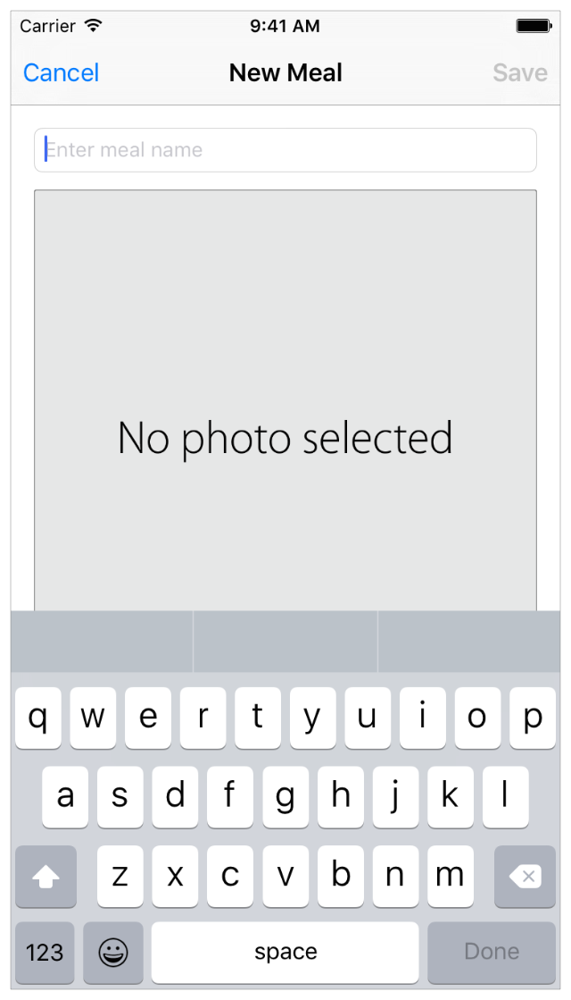
Cancel a New Meal Addition
新しい食事の追加のキャンセル
A user might decide to cancel the addition of a new meal, and return to the meal list without saving anything. For this, you’ll implement the behavior of the Cancel button.
ユーザは、新しい食事の追加をキャンセルして、何も保存しないで食事リストに戻ることに決めるかもしれません。これのために、あなたはCancelボタンの挙動を実装します。
To create and implement a cancel action method
キャンセルアクションメソッドを作成して実装するには
Open your storyboard.
あなたのストーリーボードを開いてください。
Click the Assistant button in the Xcode toolbar to open the assistant editor.
AssistantボタンをXcodeツールバーにおいてクリックしてアシスタントエディタを開いてください。
In your storyboard, select the Cancel button.
あなたのストーリーボードにおいて、Cancelボタンを選択してください。
Control-drag from the Cancel button on your canvas to the code display in the editor on the right, stopping the drag at the line just below the // MARK: Navigation comment in MealViewController.swift.
あなたのキャンバス上のCancelボタンから右のエディタの中のコード表示へコントロール-ドラッグして、MealViewController.swiftの中の// MARK: Navigationコメントのすぐ下の行でドラッグをやめてください。
In the dialog that appears, for Connection, select Action.
現れたダイアログで、Connectionに対して、Actionを選択します。
For Name, type cancel.
Nameに対して、cancelをタイプしてください。
For Type, select UIBarButtonItem.
Typeに対して、UIBarButtonItemを選択してください。
Leave the rest of the options as they are. Your dialog should look like this:
残りのオプションはそれらのままにしておきます。あなたのダイアログはこのように見えるはずです：
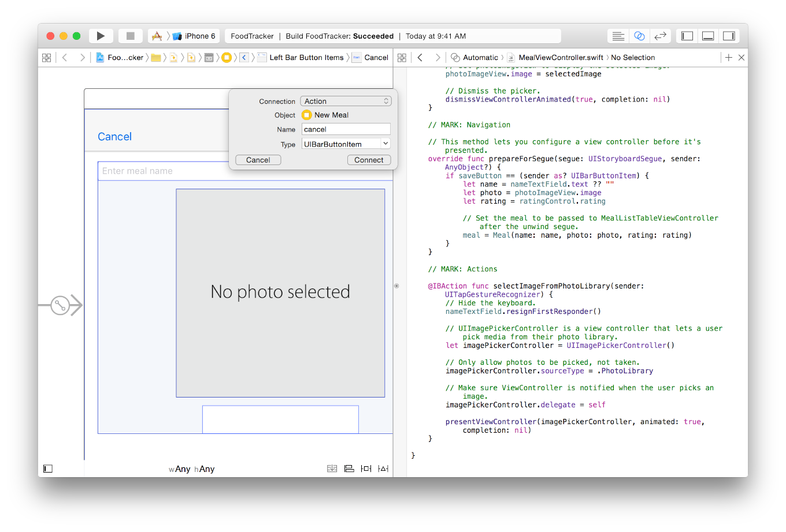
Click Connect.
Connectをクリックしてください。
Xcode adds the necessary code to MealViewController.swift to set up the action.
Xcodeは、不可欠なコードをMealViewController.swiftに加えて、このアクションを準備します。
@IBActionfunccancel(sender: UIBarButtonItem) {
}
In the cancel(_:) action method, add the following line of code:
cancel(_:)アクションメソッドにおいて、以下のコード行を加えてください：
This code will dismiss the meal scene without storing any information. When the meal scene gets dismissed, the meal list is shown.
このコードは、食事シーンを、何ら情報を格納せずに立ち去ります。食事シーンが退けられた時、食事リストが表示されます。
Your cancel(_:) action method should look like this:
あなたのcancel(_:)アクションメソッドはこのように見えるはずです：
Checkpoint: Run your app. Now when you click the Add button (+) and click Cancel instead of Save, you should navigate back to the meal list without adding a new meal.
確認点：あなたのアプリを実行してください。今ではあなたがAddボタン（+）をクリックしてCancelボタンをSaveボタンの代わりにクリックした時、あなたは新しい食事を追加することなく食事リストに導かれて戻ります。